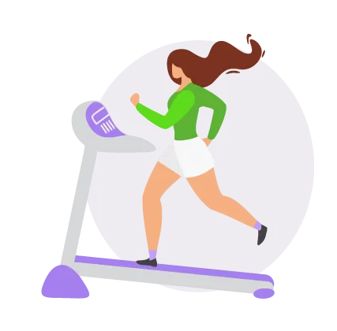

¿Por qué es tan importante
comer saludable?
Una alimentación que incluya todos los grupos de alimentos en proporciones adecuadas le asegura a tu cuerpo todos los nutrientes necesarios para un buen funcionamiento. No solo puedes alcanzar un peso saludable, sino además mejorar la inmunidad, piel, cabello, estado de ánimo, prevenir la aparición de muchas enfermedades y reducir síntomas tan comunes como el dolor de cabeza, la acidez, el cansancio, la falta de concentración. Conociendo los alimentos y planificando tus comidas, es fácil lograrlo.
¡Deja las excusas y anímate a mejorar tu alimentación!
Para más información sobre nutrición presione aquí.
Tratamientos personalizados
